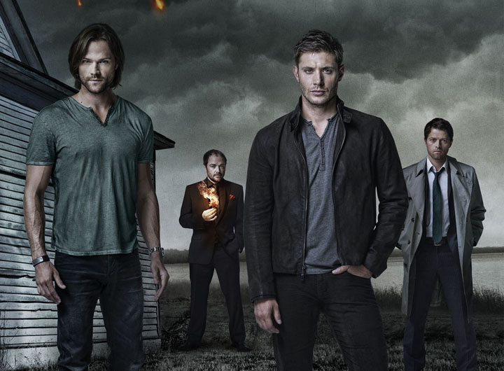
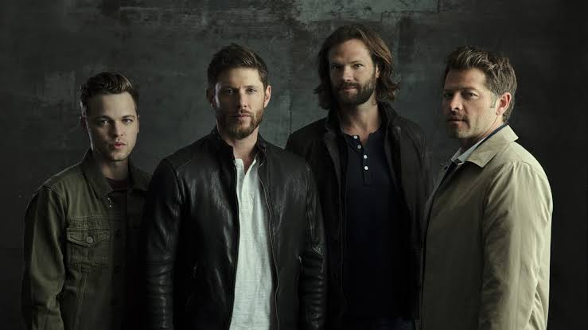
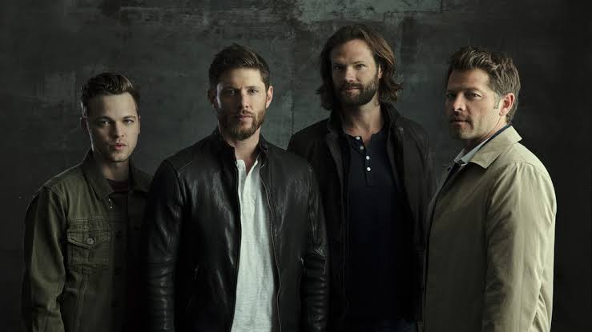
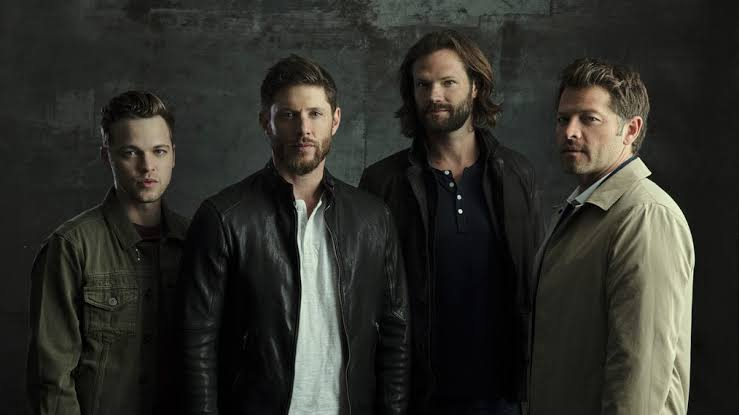
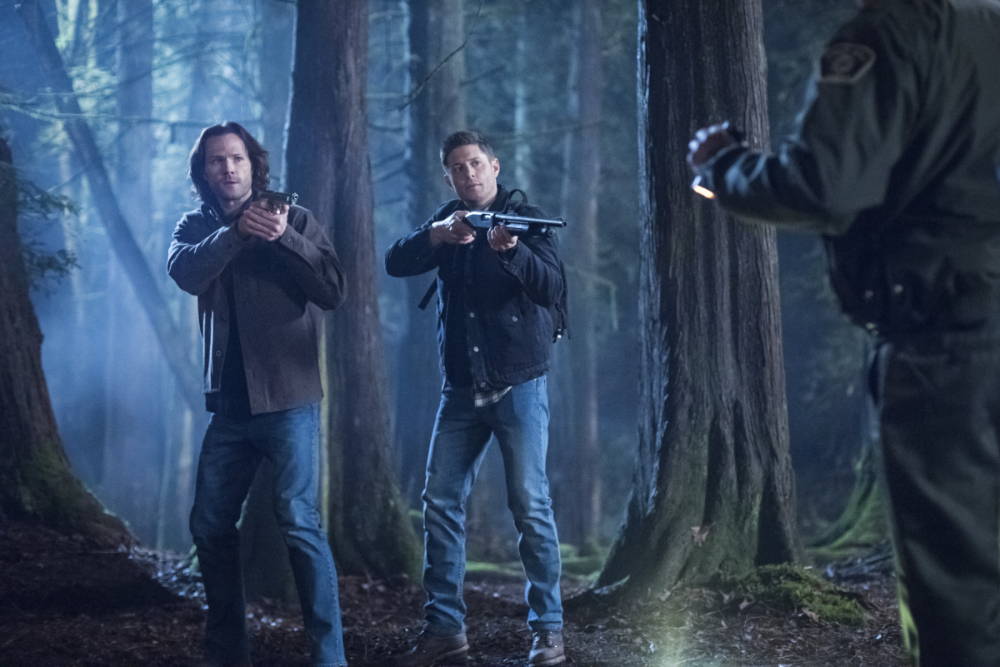
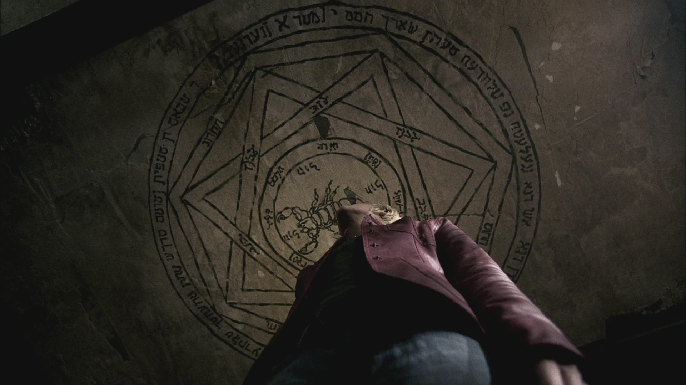
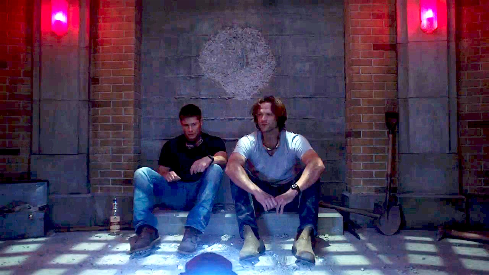
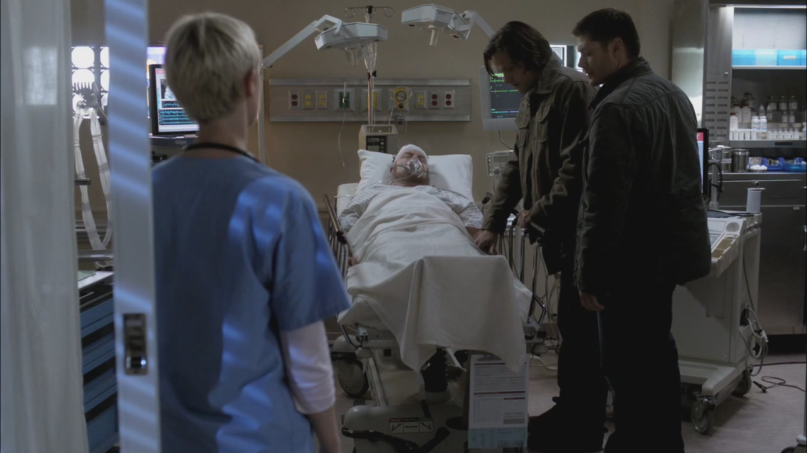

Sobre a
Série
A série segue os irmãos Sam Winchester e Dean Winchester que viajam por toda a América em um Chevrolet Impala 1967 preto investigando e combatendo eventos paranormais e outras ocorrências inexplicáveis, muitas delas baseadas em lendas urbanas americanas e folclore, assim como diferentes criaturas sobrenaturais.

 


Melhores Episódios

Demonios à Solta (Parte 2) (T02E22)
No empolgante episódio final da 2ª temporada de Supernatural, Sam morre pelas mãos de um dos filhos de Azazel, o que faz com que Dean faça um acordo, dando sua alma – depois de um ano – em troca da ressurreição do irmão.

Armadilha do Diabo (T01E22)
O episódio final da 1ª temporada de Supernatural mostrou que de fato, a série veio para ficar. Nele, os três Winchester enfrentam o demônio Azazel, falhando miseravelmente em derrotá-lo. Tudo termina com um gancho bem impactante, que mostra os Winchester envolvidos em um acidente de carro causado por Azazel.

Quem Nós Somos (T12E22)
No último episódio da décima segunda temporada de Supernatural, os Irmãos Winchester se encontram no meio de um confronto entre os caçadores americanos e os caçadores britânicos. Nesse episódio, a dupla que protagoniza Supernatural precisa parar os caçadores britânicos antes que eles destruam tudo.
